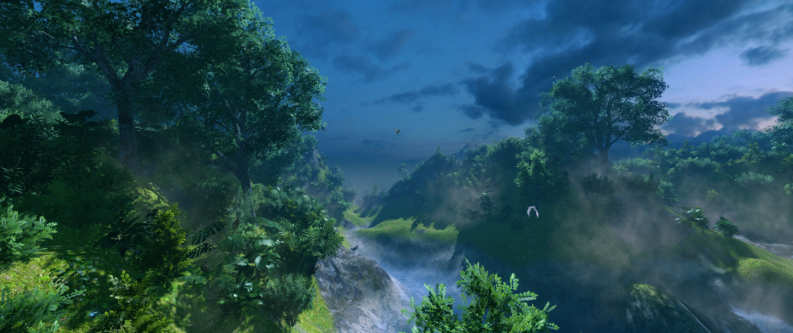
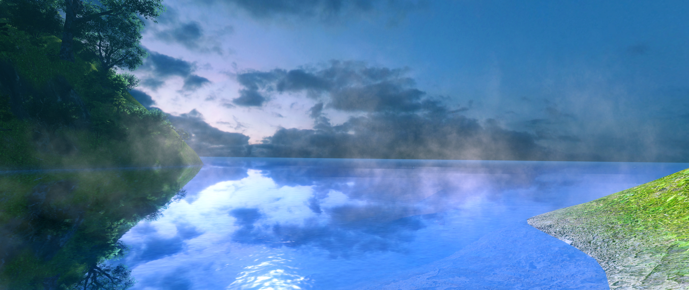
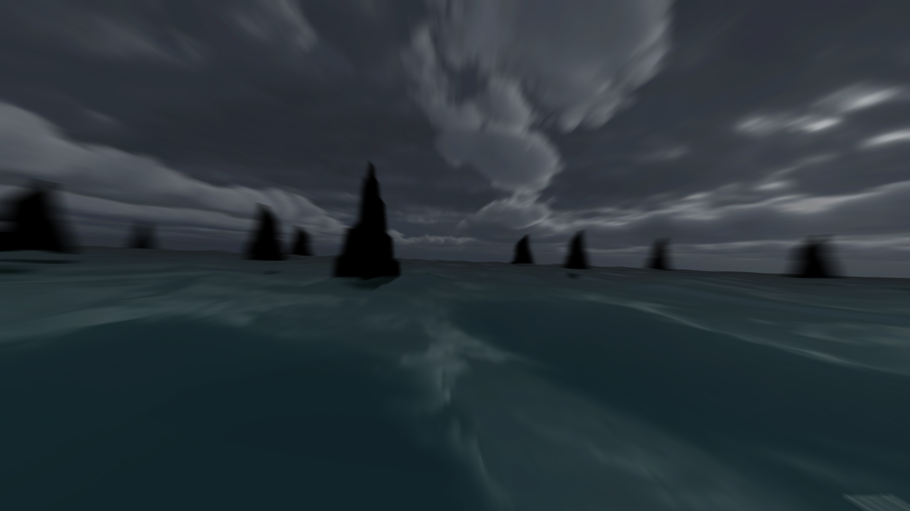
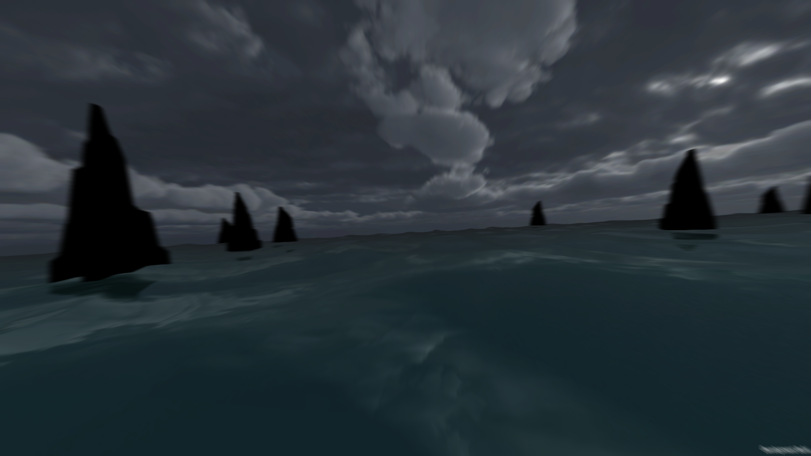
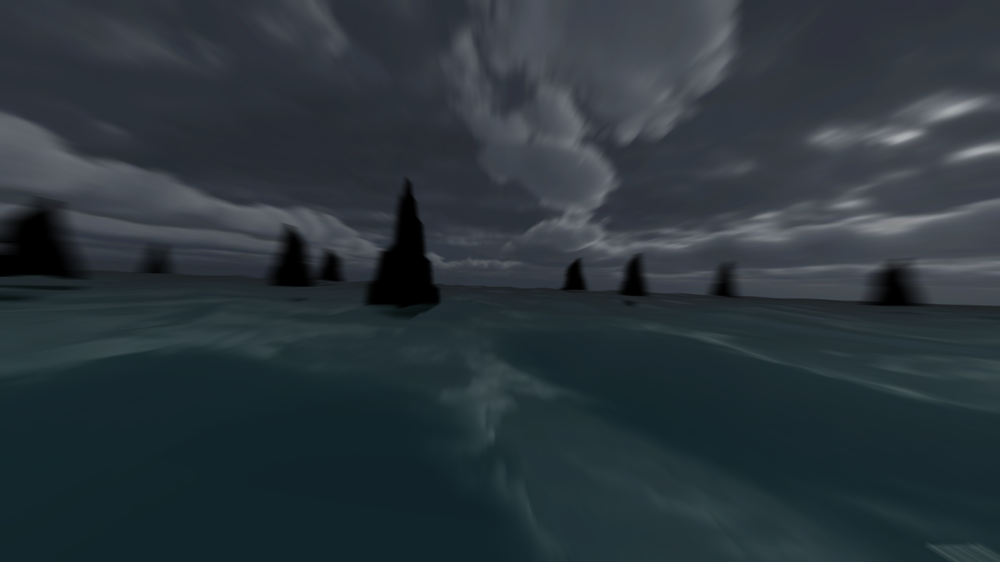
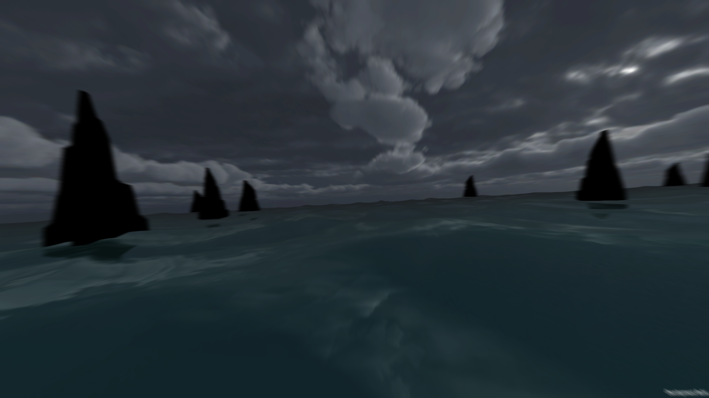
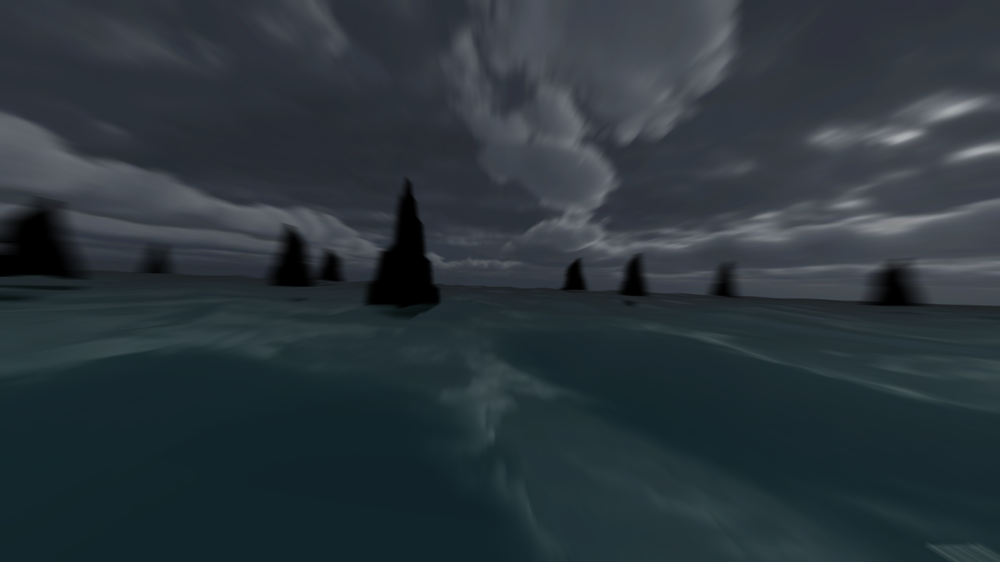
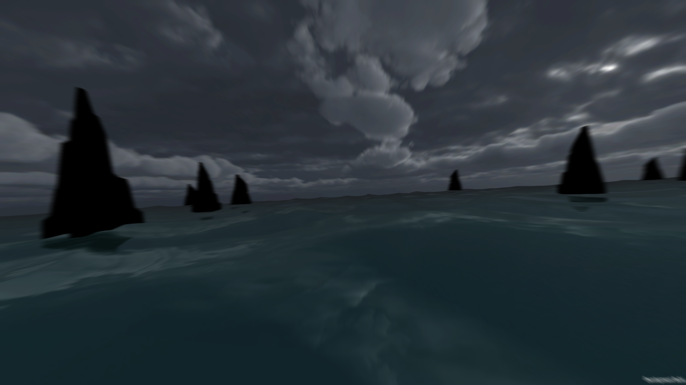

A procedurally generated GPGPU particle Supernova, right in your browser.
[Individual Project]
Description
This project is an interactive real-time demo that was a result of one of my experiments in procedural rendering, done in WebGL. This experiment was achieved by rendering 100,000+ particles in a 4D vector field with curl noise over stacked value noise. This project was done completely programmatically without the use of any tools/engines. The particle effects achieved here are fully GPU accelerated and computations such as positions of the particles, etc. are carried out entirely on the GPU. For this project, I have used Three.js - A Javascript-based wrapper library for WebGL - and this project was done in Javascript and GLSL - The OpenGL compatible shading language.
WebGL (Web Graphics Library) is a JavaScript API for rendering interactive 3D graphics within any compatible modern web browser without the use of plug-ins. WebGL does so by introducing an API that closely conforms to the OpenGL ES 2.0 standard that can be used in HTML5 <canvas> elements.
This demo is completely procedurally generated, with the Supernova being unique on every reload. As stated before, it is fully GPU optimized while being cross-platform as well as mobile-compatible. All the effects in this demo have been achieved completely through particle effects, without the use of any post-processing.
The code for this project is open-sourced at:
https://github.com/G7495x/WebGL-Supernova---Three.js
WebGL Proto Star
A procedural Star from particle effects, in your browser.
[Individual Project]
Description
This is a real-time interactive WebGL demo that procedurally renders a star using particle effects and point simulations. Over 400,000 particles are rendered to create this star. This is a fully animated object that is completely non-repetitive and to achieve the curly fields and the turbulent spirals, I have used 4D curl noise over layered value noise. This is a totally programmatic project, done without any aid from tools/engines. The particle effects achieved here are fully GPU accelerated and computations such as positions of the particles, etc. are carried out entirely on the GPU. For this project, I have used Three.js - A Javascript-based wrapper library for WebGL - and this project was done in Javascript and GLSL - The OpenGL compatible shading language.
WebGL (Web Graphics Library) is a JavaScript API for rendering interactive 3D graphics within any compatible modern web browser without the use of plug-ins. WebGL does so by introducing an API that closely conforms to the OpenGL ES 2.0 standard that can be used in HTML5 <canvas> elements.
This demo is fully procedural and is cross-platform as well as mobile compatible. All the effects in this demo have been achieved completely through particle effects, without any post-processing effects.
The code for this project is open-sourced at:
https://github.com/G7495x/WebGL-Proto-Star---Three.js
WebGL Particle Flame
A particle flame, done in WebGL.
[Individual Project]
Description
This project was my first attempt at GPGPU in WebGL. In this demo, I am rendering a flame using particle effects. In video games, rendering elements such as fire or smoke or explosions etc. has always been a challenge. Every game maker has resorted to their own technique for achieving said elements. This was my attempt at flames. I achieved this effect by using 4D curl noise over octaves of value noise. The poly-count for the above screenshot stood at around 25k. This project was achieved entirely through code without using any tools/engines. The particle effects achieved here are fully GPU accelerated and computations such as positions of the particles, etc. are carried out entirely on the GPU. For this project, I have used Three.js - A Javascript-based wrapper library for WebGL - and this project was done in Javascript and GLSL - The OpenGL compatible shading language.
WebGL (Web Graphics Library) is a JavaScript API for rendering interactive 3D graphics within any compatible modern web browser without the use of plug-ins. WebGL does so by introducing an API that closely conforms to the OpenGL ES 2.0 standard that can be used in HTML5 <canvas> elements.
This demo is cross-platform and completely mobile-compatible. All the effects in this demo have been achieved entirely through particle effects, without the use of any post- processing.
The code for this project is open-sourced at:
https://github.com/G7495x/WebGL-Proto-Star---Three.js


Unity Procedural Terrain
A completely procedurally generated landscape with lush vegetation and wildlife.
[Individual Project]
Description
This is a procedural landscaping attempt, done with the use of the Unity 3D game engine. With the theme of a swampy marshland, the underlying algorithm is capable of generating a virtually endless non-repeating landscape. With adaptive river patterns, terrain that adjusts based on context, lush vegetation without artifacts and a touch of wildlife patterns, this project aims to produce a realistic looking alive scenery. This project was done using C#.
Slow swaying trees, circling butterflies and birds, volumetric fog covering areas near to far, rivers and ponds reflecting the scene [using screen space reflections] and the highlight of the non-repeating landscape full of vegetation. To finish it off, post-processing effects such as horizon fog, HDR bloom, and a touch of color grading, the above scene was the outcome.


Unity Sea - Game
An ocean-themed first-person mobile game.
[Individual Project]
Description
This is a game I had developed during my Bachelor’s studies in 2015. It is a first-person game where you fly by obstacles to achieve a high-score based on the distance covered. This game was developed for mobile devices, specifically for the Android platform, using the then-recently released Unity 5. In this game, an endless ocean with a stormy-theme is depicted and the goal of the player is to avoid obstacles and go as further as possible. The game poses challenges such as obstacles that might fall over, obstacles that shift suddenly, misty weather and fog, hail & thunder-storms, dense and narrow rock formations, earthquakes, etc.
This game used many effects such as water-reflections [sky-box only], motion blur, color grading, lightning effect using camera exposure, rain splatter effect during rains, particle systems to depict rain & snowflakes, etc. Since this was a high-graphic game, a lot of optimization was needed to achieve 60 FPS. This game was truly fast-paced and offered both touch and gyroscopic controls.
OpenGL Audio Visualizer
An audio visualizer application built completely in C++.
[Individual Project]
Description
This is one of my projects from my undergrad, done in OpenGL and C++. It is an audio visualizer application that inputs an audio file and the visualizer dances to the tones in the music as it plays. This application was done as part of the semester project for the subject ‘Computer Graphics’. This project was implemented using the OpenGL Utility Toolkit [GLUT] library and the FMOD Audio API. This design was the final outcome of a lot of prototypes and try-outs.
A warped solenoid that dances to the music with a multi-point color gradient for the coloring, achieves a minimal and a pleasant look & feel. The audio algorithm was highly optimized to be a balance between smooth and reactive, so as to match the aesthetic of the visualizer. 3 parallel threads had to be used - one for playing the audio, another for extracting the audio samples and passing it through an FFT filter to obtain the bars and waveforms, and finally a last one for the visualizing the graphics. The end result, a smooth yet reactive visualizer that is floating and swaying in space with a starry background and this proved to be quite enticing and captivating.
WebGL Image Transition
An awesome 3D image transition effect achieved in WebGL by the use of shaders.
[Individual Project]
Description
This project was my first attempt at using shaders, done in WebGL. In this project, I have tried to create a high-fidelity transition effect for transitioning 2 images/textures. With the use of shaders, I was able to achieve the above depicted geometric transformation with a smooth animation. This particular demo is completely interactive and the user can easily control the phase of the animation with the pointer drag. While this in itself is quite simplistic, this effect can be easily carried over to any 3D shape or model to achieve some truly stunning examples. This project was achieved entirely through code without using any tools/engines. The effect achieved here is fully GPU accelerated and all the computations are carried out entirely on the GPU. For this project, I have used Three.js - A Javascript- based wrapper library for WebGL - and this project was done in Javascript and GLSL - The OpenGL compatible shading language.
WebGL (Web Graphics Library) is a JavaScript API for rendering interactive 3D graphics within any compatible modern web browser without the use of plug-ins. WebGL does so by introducing an API that closely conforms to the OpenGL ES 2.0 standard that can be used in HTML5 <canvas&rt; elements.
This demo is cross-platform and completely mobile-compatible.


 


